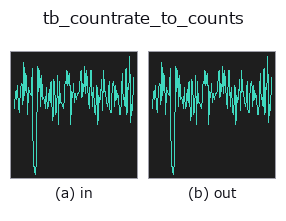

typed op• Data kinds: counts → counts
• Call: fullseye.apply(img, "tb_countrate_to_counts", a=0.5, b=0.5) (2-D model = एक image + दो scalar knobs a,b∈[0,1])

*Figure synthetic 128×128 input पर सच में चलाकर मिला output है। बाईं ओर input, दाईं ओर output। Point clouds ऊपर से देखे गए scatter के रूप में (brightness = z), 1-D series line के रूप में, volumes z दिशा में maximum-intensity projection के रूप में, videos बीच के frame के रूप में, complex images amplitude के रूप में, और जो return values चित्र नहीं बन सकते वे स्वयं values के रूप में दिखाए जाते हैं।*
Knob a को बदलकर (0.1 / 0.5 / 0.9, दूसरा knob default पर):
▸ tb_countrate_to_counts: knob a को बदलने का figure (docs site)
*Knob b output नहीं बदलता (मापा गया: 0.1 / 0.5 / 0.9 पर एक जैसा)।*
Stages (पहले आने वाले ops → यह op, बाएँ से क्रम में):
▸ tb_countrate_to_counts: stages का figure (docs site)
दूसरी images पर भी (synthetic scene / photo / coins। ऊपर की row में inputs, नीचे की row में उनके outputs। Knobs default पर):
▸ tb_countrate_to_counts: दूसरी images पर output (docs site)
count rate [Hz] → counts counts। countrate का exit (reversible)।
unit ही conversion की पूरी सामग्री है: [1/s] * [s] = [1]। gate_s integration window सेकंड में है, default 1 ms। counts "हर time bin में photon संख्या" का type है, इसलिए rate series को सीधे counts कहलाने देने पर 7 order of magnitude के अंतर के साथ यह चुपचाप पास हो जाता है (TYPE_CHECKS दोनों को केवल "non-negative 1-D" के रूप में देखता है)।
counts_to_countrate के साथ round trip में मापा गया max|Δ| = 9.3e-10 (range 1e3-1e7 Hz है, इसलिए relative 1e-16 = double precision rounding की 1 unit। केवल absolute मान देखने पर यह बड़ा लगता है, इसलिए rate जैसी चौड़े order वाली मात्राओं को relative में कहा जाता है)।
★2 बार लगाने पर भी exception नहीं आता। TYPE_TO_SORT countrate को counts में मिला देता है, इसलिए output सीधे input से जुड़ जाता है। मापा गया (2026-09-08, 1,200 Hz को gate 1 ms से): 1 बार में 1.2000 counts, फिर 1 बार गुज़ारने पर 0.0012 counts —— 1,000 गुना की गड़बड़ी बिना ऋणात्मक मान या NaN के पास हो जाती है। केवल मान देखकर "rate है या count" तय करने का कोई तरीका नहीं, इसलिए इस 1 मामले को check से नहीं बल्कि caller के अनुशासन से ही बचाया जा सकता है (जोड़ा गया path लिखकर रखें)।
Args:
countrate: (N,) non-negative rate [Hz]।
gate_s: integration window [s]। > 0।
Returns:
(N,) float64 non-negative count।
Raises:
ValueError: ऋणात्मक rate / gate_s <= 0 / गलत shape / non-finite।
2-D evolution registry में bridge किया गया reprconv का op countrate_to_counts। implementation वही है; केवल calling convention को op(v, a, b) के अनुरूप किया गया है। a से gate_s (default 0.001) बदला जाता है। b उपयोग नहीं होता।
• Sample data catalog (DL URL / license) — 2-D के लिए skimage.data (BSD/public) + synthetic, 3-D के लिए real data sources (Stanford/PDS आदि) के DL URL।
• Operators का स्रोत और संदर्भ — इस op family के मूल research/methods के स्रोत।
नीचे का program सच में चलता है, यह जाँचा गया है (figure वाला ही input)। Studio की help में यह block buttons बन जाता है, जिनसे इसे वहीं load करके चलाया जा सकता है।
img_to_counts 0.50 0.50 tb_countrate_to_counts 0.50 0.50
▸ यह pipeline load करें · Load करके चलाएँ
नीचे के उदाहरण मूल ledger op countrate_to_counts को call करते हैं। यह bridge op वही implementation है, बस fn(v, a, b) convention के अनुसार ढाला गया है, इसलिए व्यवहार वैसा ही लागू होता है (केवल call का रूप अलग है)।
• representation_roundtrip — py -3.11 examples/representation_roundtrip.py
counts को input के रूप में लेते हैं)identity · tb_spad_deadtime_apply · tb_spad_deadtime_correct · tb_tcspc_coates_correct · tb_tcspc_irf_convolve · tb_tcspc_background_subtract · tb_dtof_depth · tb_counts_to_countrate
typed)tb_points_to_voxel · tb_estimate_point_normals · tb_iss_keypoints · tb_project_points · tb_render_point_depth · tb_statistical_outlier_removal · tb_radius_outlier_removal · tb_voxel_grid_downsample
*Provenance: ops.py — 2D operator registry. यह per-op note tools/opdocs.py md से अपने-आप generate होता है (हाथ से edit न करें)।*
© 2026 Kazufumi Furuse — Fullseye operator documentation. Licensed under Apache-2.0.